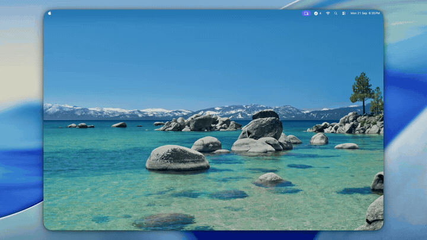

Three lanes. One popover.
Zero accounts.
Now, Nxt, and Ltr — organize what matters today, what's coming next, and what can wait. One hotkey away, living quietly in your menu bar.
Now
Nxt
Ltr
Install TaskNxt
macOS 13 (Ventura) or later.
brew install thamaraiselvam/tasknxt/tasknxt
See it in your menu bar
Click the checklist icon — or hit your hotkey — and the popover appears.

Built to disappear until you need it
No dock icon, no windows to manage — just a popover, three lanes, and a hotkey.
Instant triage
A configurable global hotkey (default ⌃Q) summons TaskNxt from any app. Add, drag, or check off a task, and it's gone.
Three fixed lanes
Now / Nxt / Ltr — always in the same order, so priority triage becomes muscle memory instead of a decision.
Up to 4 tabs
Separate Work, Personal, or any workspace you like. The menu bar badge shows the active tab's incomplete-task count.
Drag, drop, done
Reorder within or across lanes, double-click to rename in place, right-click to archive or delete.
Auto-cleanup & archive
Completed tasks show a countdown and purge automatically — or keep a browsable, restorable archive instead.
Light & dark mode
Follows your system appearance live, with a standalone Settings window for General, Shortcuts, Tabs, and About.
🔒 100% local
All data stays on your Mac
🚫 No accounts
No sign-in, ever
📡 No network calls
No analytics, no telemetry
💸 Free & open source
MIT licensed on GitHub